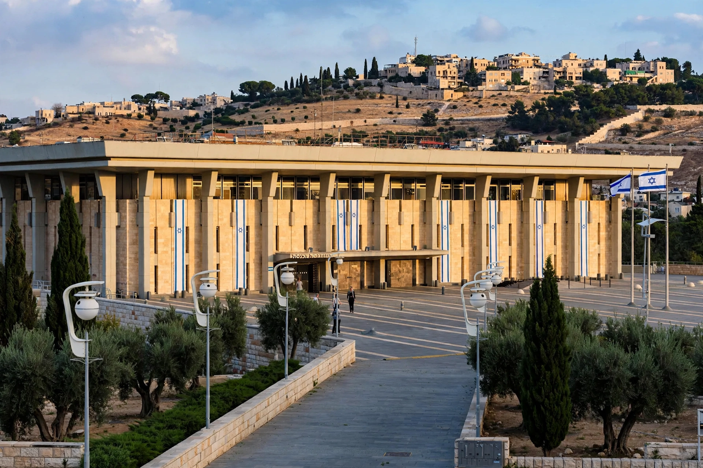

Prime Minister of Israel

| Incumbent | Benjamin Netanyahu (since 29 December 2022) |
|---|---|
| Residence | Beit Aghion, Jerusalem (official) |
| Appointer | President of Israel, after consultation; confirmed by Knesset |
| Term length | Linked to the Knesset term (up to four years) |
| First holder | David Ben-Gurion (1948) |
The prime minister of Israel (Hebrew: ראש הממשלה, Rosh HaMemshala, "head of the government") is the head of government and chief executive of the State of Israel. Under Basic Law: The Government, the prime minister is the central figure in Israel's parliamentary system: following elections, the president of Israel charges the Knesset member best placed to form a coalition with doing so; that member then presents a government to the Knesset and must win its confidence. Because no party has ever held a majority of the Knesset's 120 seats, the prime minister invariably governs through a coalition.
Role and powers
The prime minister chairs the cabinet, determines its agenda, appoints and dismisses ministers (subject to coalition constraints), and directs foreign, defence and economic policy in practice, although the government as a whole is collectively the executive authority of the state. The prime minister heads the Security Cabinet, oversees the intelligence services (Mossad and Shin Bet report directly to the prime minister), and may dissolve the Knesset in defined circumstances with the president's consent. If the Knesset passes a motion of no confidence by 61 votes it must simultaneously name an alternative prime minister — a constructive vote of no confidence introduced to promote stability.
Direct election experiment
Between 1996 and 2001 the prime minister was chosen in a separate direct popular election, held alongside Knesset elections. Benjamin Netanyahu (1996), Ehud Barak (1999) and Ariel Sharon (2001, in a special election without a Knesset vote) won under this system. It was judged a failure — it encouraged split-ticket voting, shrank the large parties' Knesset delegations and thus made coalition-building harder — and was repealed in 2001, restoring the parliamentary method.
History
The first prime minister was David Ben-Gurion, who proclaimed the state in May 1948 and led it (except for a two-year interval under Moshe Sharett) until 1963. Subsequent holders include Levi Eshkol, Golda Meir, Yitzhak Rabin (assassinated in office in 1995, the only Israeli prime minister to be assassinated), Menachem Begin, Yitzhak Shamir, Shimon Peres, Ehud Barak, Ariel Sharon and Ehud Olmert. Benjamin Netanyahu is the longest-serving prime minister in Israel's history, having held the office in 1996–1999, 2009–2021 and again from 29 December 2022, returning after the brief premierships of Naftali Bennett and Yair Lapid. The official residence is Beit Aghion on Balfour Street in Jerusalem; the prime minister's office is in the Government Complex in Givat Ram.